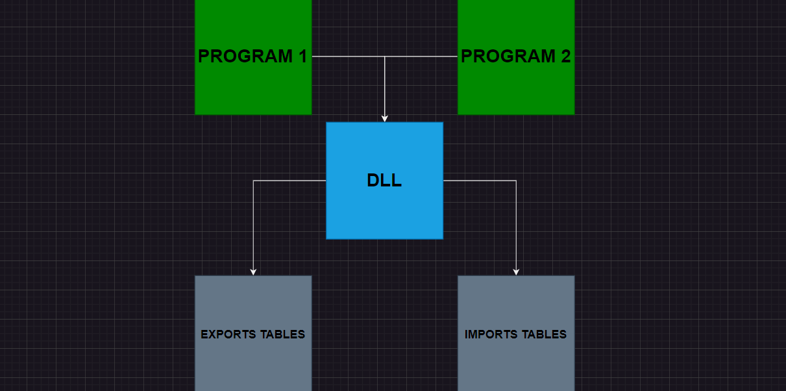
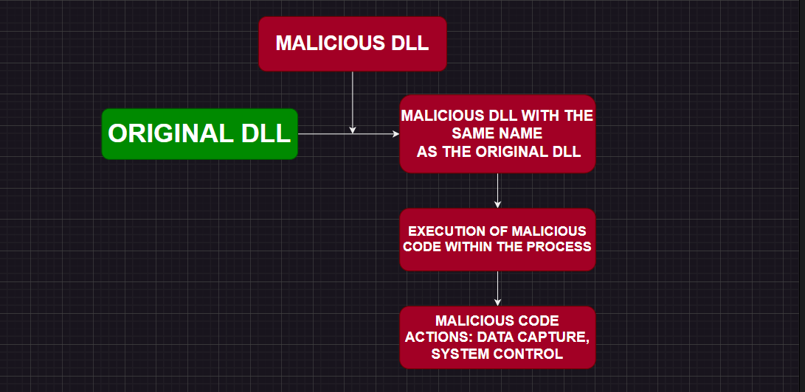

Introdução
As DLLs (Dynamic Link Libraries) são componentes essenciais no desenvolvimento de software, especialmente em ambientes Windows, pois permitem o compartilhamento de código e dados entre múltiplos programas, promovendo a modularidade e o reuso de código. Elas economizam espaço em disco e memória e facilitam a manutenção e atualização de software. No entanto, essa mesma flexibilidade pode ser explorada por criadores de malware, que usam DLLs para executar código malicioso sem o conhecimento do usuário, infiltrando sistemas, roubando dados e mantendo acesso persistente a redes comprometidas.
Como uma DLL Funciona
As DLLs (Dynamic Link Libraries) são projetadas para permitir que múltiplos programas compartilhem funcionalidades comuns, promovendo a modularidade e a eficiência do software. Elas contêm código executável, recursos e dados que podem ser acessados por vários programas simultaneamente. Quando um programa precisa de uma função ou recurso específico presente em uma DLL, ele faz uma chamada para essa biblioteca, carregando-a na memória apenas uma vez, mesmo que múltiplos programas a utilizem. Isso economiza recursos do sistema e reduz a redundância.
Estrutura e Funcionamento
Uma DLL é semelhante a um executável (EXE), mas não pode ser executada diretamente. Em vez disso, ela é carregada e usada por outros executáveis ou DLLs. Ela possui uma tabela de exportação, que lista todas as funções e recursos disponíveis para outros programas, e uma tabela de importação, que especifica quais funções e recursos de outras DLLs ou executáveis ela utiliza.

Como uma DLL (Dynamic Link Library) funciona
ㅤ- Programas: Há dois programas representados (Programa 1 e Programa 2) que necessitam de funcionalidades específicas.
ㅤ- DLL: A própria DLL contém código executável, recursos e dados que são compartilhados entre múltiplos programas.
ㅤ- Setas: Essas setas indicam que ambos os programas fazem chamadas para a DLL a fim de utilizar suas funcionalidades.
ㅤ- Tabela de Exportação: Esta tabela lista todas as funções e recursos que estão disponíveis para outros programas utilizarem.
ㅤ- Tabela de Importação: Esta tabela especifica quais funções e recursos de outras DLLs ou executáveis a DLL atual utiliza.
DLL Hijacking

Explicando o DLL Hijacking
O sequestro de DLL é um ataque onde um atacante substitui uma DLL legítima por uma versão maliciosa. Esse ataque explora a forma como os programas procuram e carregam as DLLs necessárias. Tipicamente, os programas primeiro procuram por DLLs no diretório de trabalho atual antes de verificar os diretórios do sistema. Um atacante pode colocar uma DLL maliciosa com o mesmo nome da DLL legítima no diretório onde o programa é executado. Quando o programa tenta carregar a DLL, ele carrega a versão maliciosa, permitindo que o atacante execute código malicioso no contexto do programa alvo, potencialmente ganhando controle do sistema.
DLL Hijacking na Prática
É muito comum recorrermos ao YouTube quando algo dá errado ao tentar executar algum programa, seja porque a DLL está falhando ou desatualizada. Esse é o perigo: já parou para pensar quantos ataques de DLL hijacking você pode ter permitido no seu computador só porque queria jogar algo crackeado ou burlar serviços pagos de aplicativos? Lembre-se, se você já baixou alguma DLL do YouTube para obter vantagens, na verdade, está se colocando em extrema desvantagem e perigo. Esses ataques de DLL hijacking podem capturar várias de suas informações pessoais, incluindo senhas. Tenha cuidado com qualquer conteúdo que você baixar!
ㅤDica de segurança: NÃO BAIXE NENHUM CONTEÚDO FORA DO SOFTWARE / NÃO BAIXE CONTEÚDO OU FORMAS MILAGROSAS (COISAS CRACKEADAS)!